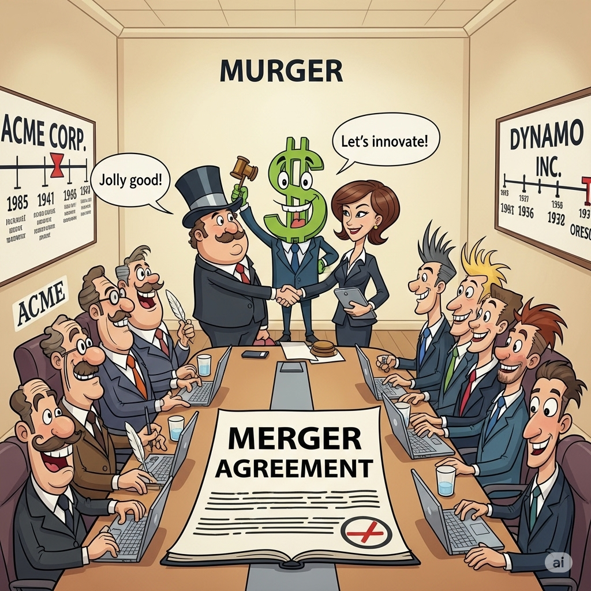
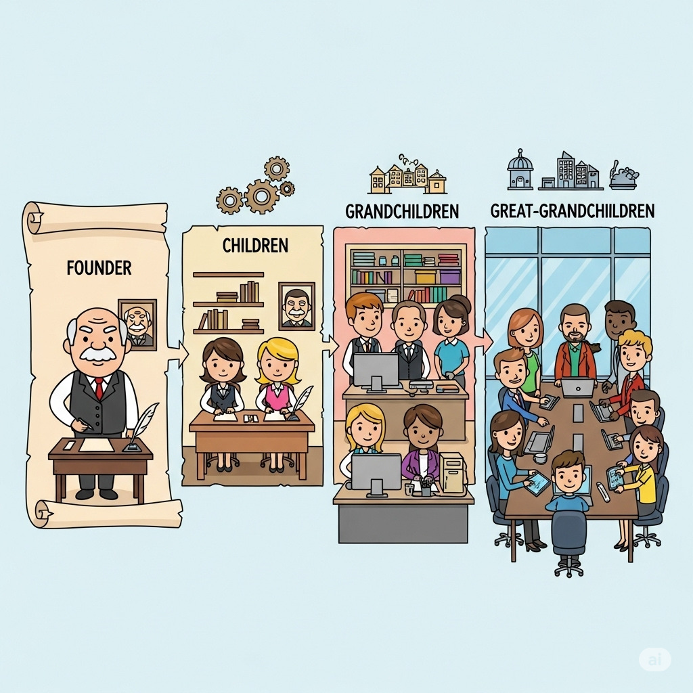
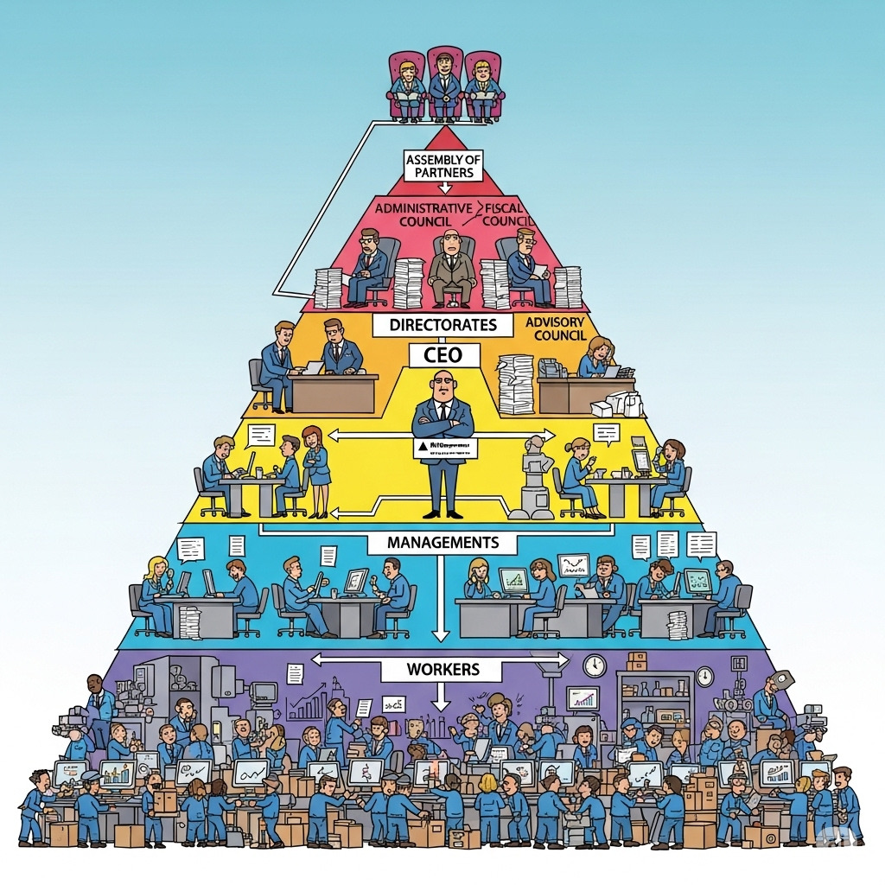

Capítulo 2 Governança Corporativa - O topo da Pirâmide
2.1 O que é Governança Corporativa
Governança corporativa lida com o processo decisório na alta gestão e com os relacionamentos entre os principais personagens das organizações empresariais, notadamente executivos, conselheiros e acionistas/cotistas.
No livro “Governança Corporativa”, os autores José Paschoal Rossetti e Adriana Andrade dão a seguinte definição para Governaça Corporativa:
Um sistema pelo qual as sociedades empresárias são dirigidas e monitoradas, envolvendo os relacionamentos entre sócios/cotistas, conselho de administração, diretoria, auditoria independente e conselho fiscal. - (Rossetti e Andrade - 2014)
Instituto Brasileiro de Governança Corporativa , IBGC, define governança corporativa como
“Sistema no qual as empresas são dirigidas, monitoradas e incentivadas envolvendo os relacionamentos entre sócios, conselho de administração, diretoria, órgãos de fiscalização e controle e demais partes interessadas”. (IBGC, 2015)
No livro “Governança Corporativa no Brasil e no Mundo: Teoria e Prática”, o autor Alexandre Di Miceli da Silveira fornece a seguinte definição para Governança Corporativa:
“O conjunto de mecanismos que visam a fazer com que as decisões corporativas sejam sempre tomadas com a finalidade de maximizar a perspectiva de geração de valor de longo prazo para o negócio” (Di Miceli, Alexandre - 2021)
2.2 Quais motivos criam a necessidade de Governança Corporativa ?
Os mecanismos de governança devem estar presentes em qualquer companhia em função da existência de três potenciais problemas na cúpula das empresas: conflito de interesses, limitações técnicas individuais e vieses cognitivos.
| Os “3 Problemas” da alta cúpula |
|---|
|
|
|
Mas qual seria(m) essa(s) característica(s) ?
- Quantidade de funcionários da empresa ?
- Tamanho da corporação ?
- Ramo de atividade da empresa ?
- Faturamento mensal/anual da empresa ?
| CACAU SHOW | WEG | TRAMONTINA |
|---|---|---|
| MENOS DE 10 SÓCIOS | 3 SÓCIOS FUNDADORES | 1 CASAL FUNDADOR - MARIDO SÓCIO ADMINISTRADOR |
| EMPRESA FAMILIAR | EMPRESA LIVRE INICIATIVA | EMPRESA FAMILIAR |
| CAPITAL FECHADO - 2025 | CAPITAL ABERTO DESDE ANOS 1970 | CAPITAL FECHADO |
 |
 |
2.3 O principal fator é o número efetivo ou potencial de sócios
- Efetivo: NÚMERO DE SÓCIOS
| PETROBRÁS |
| MUITOS, MUITOS SÓCIOS - CAPITAL ABERTO |
| EMPRESA SOCIEDADE ANÔNIMA (S/A) |
| GOVERNO FEDERAL É O MAIOR ACIONISTA ( MAIS DE 50% DAS AÇÕES) |
2.4 O principal fator é o número efetivo ou potencial de sócios
Potencial: futuro número de sócios !
POTENCIAL CASO DE AUMENTO DE SÓCIOS FUSÕES  AQUISIÇÕES INCORPORAÇÕES SUCESSÃO FAMILIAR 
2.5 Casos que normalmente demandam arquitetura de governança corporativa
Sucessão familiar que amplie significativamente o número de sócios
(filhos – 1ª geração –, netos – 2ª geração – etc.)
Fusão ou incorporação que amplie o número de acionistas ou cotistas
Sociedade que já nasça com grande número de acionistas ou cotistas
2.6 Arquitetura de Governança
Topo - Assembléia de Acionistas/Cotistas
2o Degrau - Conselhos (Administrativo, Fiscal e Consultivo)
3o Degrau - CEO
4o Degrau - Diretorias

2.7 ARQUÉTIPOS DA GOVERNANÇA CORPORATIVA
SEPARAÇÃO DE PROPRIEDADE E GESTÃO
Anglo-Saxão
Alemão
Francês
Japonês
Latino-Americano
2.7.1 Características definidoras
Financiamento predominante - Fonte principal: mercado de capitais - Ações (equity) como base da capitalização - Fundos de pensão com grande parte do patrimônio em ações - Orientação para o mercado
Propriedade e controle acionário - Estrutura patrimonial pulverizada - Raros acionistas com mais de 10% do capital nas maiores empresas
Propriedade e gestão - Dissociação entre propriedade e gestão
Conflitos de agência - Principal conflito: acionistas x gestores - Altos custos de agência
Proteção legal a minoritários - Forte, por leis e regulação do mercado

2.7.2 Características definidoras
Financiamento predominante - Crédito bancário de longo prazo como principal fonte - Relação duradoura com bancos, reduzindo assimetria de informação
Propriedade e controle acionário - Estrutura patrimonial concentrada - Bancos e grandes acionistas controlam boa parte do capital
Propriedade e gestão - Bancos com grande poder, monitorando interesses dos credores
Conflitos de agência - Principal risco: expropriação de minoritários - Conflitos caros são raros
Proteção legal a minoritários - Não é prioridade; tendência de fortalecer o mercado de ações
2.7.3 Características definidoras
Financiamento predominante - Bancos financiam via dívida de longo prazo - Relação duradoura entre bancos e empresas
Propriedade e controle acionário - Concentração peculiar: keiretsu com posse cruzada de ações
Propriedade e gestão - Sobreposição; predominância do consenso
Conflitos de agência - Custos e conflitos insignificantes
Proteção legal a minoritários - Sustentação de relações de longo prazo - Gestão voltada a múltiplos interesses
2.7.4 Características definidoras
Financiamento predominante - Indefinido, mas alavancagem relevante - Forte presença de empresas familiares fechadas
Propriedade e controle acionário - Controle concentrado
Propriedade e gestão - Sobreposição; gestão fechada - Conselhos com função mais consultiva
Conflitos de agência - Baixos conflitos devido à concentração - Risco de expropriação de minoritários
Proteção legal a minoritários - Fraca, com baixo enforcement - Mercados de capitais pouco desenvolvidos

2.7.5 Características definidoras
Financiamento predominante - Predomínio da dívida - Mercados de capitais pouco expressivos
Propriedade e controle acionário - Propriedade concentrada - Maior participação estrangeira nos últimos anos
Propriedade e gestão - Exercida pelos majoritários
Conflitos de agência - Entre acionistas majoritários e minoritários
Proteção legal a minoritários - Predominantemente fraca - Alta proporção de ações sem voto
2.8 Referências
ROSSETTI, José Paschoal; ANDRADE, Adriana. Governança Corporativa: Fundamentos, Desenvolvimento e Tendências. São Paulo: Atlas, 7. ed., 2014. p. s.p.
SILVEIRA, Alexandre Di Miceli da. Governança Corporativa no Brasil e no Mundo: Teoria e Prática. Rio de Janeiro: Elsevier, 2010.
2.9 Exercícios da aula
2.9.1 Testes sobre Modelos de Governança Corporativa
Livro Governança Corporativa no Brasil e no Mundo: Teoria e Prática - Alexandre Di Miceli da SILVEIRA
Exercícios referentes ao capítulo 1 - Introdução à Governança Corporativa - pág 3 a 6 - Exercícios referentes ao capítulo 2 - Capítulo 2 – Estrutura de Governança Corporativa - pág 37 a 40 -
| Questão 1: |
|---|
| Qual dos seguintes modelos de governança corporativa tem como principal fonte de financiamento o mercado de capitais, com as ações sendo a base da capitalização? |
|
|
|
|
|
| Questão 2 |
|---|
| A implantação de governança corporativa não depende de: |
| a) Tamanho da empresa. |
| b) Número efetivo ou potencial de sócios. |
| c) Fusões ou incorporações. |
| d) Sucessão familiar. |
| e) Aumento de acionistas minoritários. |
| Questão 3 |
|---|
| Qual é o principal fator para decidir quando implantar uma arquitetura de governança corporativa? |
|
|
|
|
|
| Questão 4 |
|---|
| A sucessão familiar que amplia o número de sócios é um caso típico que demanda: |
|
|
|
|
|
Livro Governança Corporativa no Brasil e no Mundo: Teoria e Prática - Alexandre Di Miceli da SILVEIRA
Exercícios referentes ao Capítulo 3 – Modelos de Governança Corporativa no Mundo - pág 71 a 85 - - Modelo Anglo-Saxão - pág 71 - 74 - Modelo Alemão - pág 74 - 77 - Modelo Japonês - pág 77 - 80 - Modelo Francês - pág 80 - 82 - Modelo Latino-Americano - pág 82 - 85
| Questão 5 |
|---|
| No modelo anglo-saxão, a principal fonte de financiamento das corporações é: |
|
|
|
|
|
|
| Questão 6 |
|---|
| No modelo alemão, o papel dos bancos é: |
|
|
|
|
|
| Questão 7 |
|---|
| No modelo japonês, a estrutura de propriedade é caracterizada por: |
|
|
|
|
|
| QUESTÃO 8 |
|---|
| No modelo francês, o conflito de agência é reduzido porque: |
|
|
|
|
|
| Questão 9 |
|---|
| No modelo latino-americano (brasileiro), qual é o principal conflito de agência? |
|
|
|
|
|
| QUESTÃO 10 |
|---|
| Em relação à proteção legal dos acionistas minoritários: |
| a) É forte e predominante no modelo latino-americano. |
| b) É pouco relevante no modelo japonês. |
| c) É expressiva e garantida por regulação no modelo anglo-saxão. |
| d) É garantida pela concentração patrimonial no modelo francês. |
| e) É inexistente no modelo alemão. |
2.10 Respostas dos exercícios
| Questão | Alternativa Correta |
|---|---|
| 1 |
|
| 2 |
|
| 3 |
|
| 4 |
|
| 5 |
|
| 6 |
|
| 7 |
|
| 8 |
|
| 9 |
|
| 10 |
|